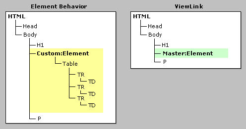

Viewlink简介
Viewlink是元素行为的一个特性，让你可以编写完全封装的动态HTML(DHTML)行为，并如同一个充满活力的自定义元素一般将其导入到网页中。Viewlink化的文档内容，也就是传统意义上的文档片段，在网页中如同规范的HTML内容一般渲染并运转。无论是二进制编码的DHTML行为还是脚本版的HTML组件(HTC)，都可以用于实现Viewlink化的元素行为，但是本总概主要还是关注于脚本版的HTC文件中的Viewlink的用法。
使用Viewlink的元素行为是高度封装的，因此它完全可以用于以高度模块化的方式设计并创建丰富多彩的网络应用程序。在其他的开发环境中，封装已被证实更加有利，也更加直观，如微软Visual C++和微软Visual Basic。而现在则已得到承认，封装在网络开发中也同样具有优势。
当使用Viewlink时，主文档中脚本对行为的渲染并不起作用——除非组件有公共的属性和方法才有这个可能。组件可以完全地封装，例如它的功能性、方法、样式属性都可以完全从主文档中隐藏。相反的，组件可以被设计为提供一些方法和属性的扩展接口，从而增强主文档与组件本身之间的交互。因此，Internet Explorer 5.5中的行为组件模型可谓为组件开发者们提供了一个很好的弹性。
在规范的元素行为和使用Viewlink的元素行为之间存在着一些很重要的差异。一个规范的元素行为定义了一个自定义元素；因此当讨论说某个元素行为使用了Viewlink时，主文档中的自定义元素实际上是作为主元素被访问的。区别主要是因为不同类型的元素行为在主文档树中有着不同的表现效果。Viewlink化的元素行为的文档片段并不出现在主文档树种，但是它会被显示出来。这是因为文档片段已经完全被Viewlink封装起来，而一个规范的元素行为中的文档片段则被直接追加到自定义元素上。这些区别意味着，在为各种不同类型的行为编写与其文档对象模型(DOM)相关的脚本时，格式上存在着一些细微的不同。
使用HTC文件编写的DHTML行为的一个好处是，它们无需安装在客户端机器上，而二进制编码的DHTML行为则一般都需要。HTC文件自动作为主网页的一部分进行下载并解析，因此得到的是更流利的浏览体验。脚本版本的组件在Internet Explorer 5.5中可以设计得非常强大，事实上，它们能够完成的工作与二进制编码的DHTML行为相差无几，而开发起来却要简单容易得多。
本文解释了如何使用Viewlink功能，也略述了使用Viewlink和元素行为时所能发现的主要优势。同时也有多个样例来演示如何编写自己的Viewlink化元素行为。
本文党主要讨论了下面的主题。
先决条件
为了使阅读本文带来的好处能够最大化，您应该熟悉DHTML行为并对HTC文件编写的行为的基础原理有一定的了解。
尚对DHTML不熟悉的阅读者建议先去阅读这些文章：《HTC参考》，《DHTML行为简介》，和《关于元素行为》。
因为Viewlink是元素行为的一个比较与众不同的特性——它将文档片段起来——因此《关于元素行为》是任何希望使用Viewlink的用户的必读文档。
术语
此部分定义了用于描述Viewlink功能的术语。
| 自定义元素 | 用户自行定义的元素，也可以理解为自定义标签。要使用自定义元素必需为HTML文档声明相应的命名空间。 |
|---|---|
| 文档片段 | 独立存在于主文档正文内容之外的一个或多个HTML元素。Viewlink特性或其他诸如appendChild的脚本方法，可以用于插入一个文档片段到主文档中并渲染此片段。 |
| 元素行为 | Internet Explorer 5.5的特性，允许DHTML行为以同步方式转变为自定义元素。由元素行为转变来的自定义元素可以像其他元素一样在HTML文档中使用，该行为的功能绝对不会从该元素上移除。 |
| 主元素 | 实现Viewlink方式的元素行为的自定义元素。Viewlink让元素行为的文档片段可以作为主文档中的内容被渲染。 |
| 主文档 | 客户端正在浏览的使用了元素行为的网页。 |
| 命名空间 | 可供自定义元素和属性使用的名称的集合。命名空间用于确保每个元素都能被唯一性的识别。欲了解更多的信息，请阅读《XML指南：使用命名空间》。 |
在用于创建二进制编码的DHTML行为的技术与用户创建HTC文件的技术之间存在着一些不同之处，但这方面的讨论并不在本总概的讨论返回之内。因此，在本文中，元素行为和Viewlink的讨论大体上都基于HTC文件编写的DHTML行为。要了解更多关于二进制编码的行为的信息，请阅读文章《实现二进制编码的DHTML行为》。
优势
元素行为和Viewlink能力介绍于Internet Explorer 5.5，它们让你可以定义充满活力的自定义元素。Internet Explorer 5.5平台提供了一个坚实的基础，使创建完全封装的DHTML行为成为可能，使扩展规范的HTML元素的基本功能也成为可能。事实上，Internet Explorer 5.5中新出现的DHTML行为能力正是为了满足创建复杂多变的控制器和组件的需求。因此Internet Explorer 5.5鼓励开发可重用的组件，而这也正是最吸引人的地方，因为你仅仅使用附带脚本的HTC文件就可以实现。
下面的表格演示了元素行为使用和不使用Viewlink时的差别。左边展示的是一个应用了元素行为的简单的文档树结构。以黄色显示的自定义元素将文档片段内容也追加到主文档中。其结果是一颗由主文档和文档片段组成的文档树。右边展示的是实现了使用Viewlink的元素行为的主文档结构图，看起来要简单得多。只有主文档出现在主文档的树中，而文档片段则被完全封装起来。
Viewlink一个有用的功能在于它允许开发者可以根据需要使用嵌套Viewlink组件来将文档树分割为多个文档片段。在很多情况下这项功能可以将内容和脚本抽离分布在多个层次中以达到想要的效果。下面的日历样例演示了嵌套Viewlink组件的一种用法；它同样也演示了Viewlink其他的一些有趣的优势。
在DHTML行为的开发过程中可能会碰到许多问题，而通过使用Viewlink的元素行为，很多问题都可以避免。主文档树中的样式并不继承到Viewlink组件中，除非组件作者在设计时作出了允许的肯定。对组件内容非预期的格式化可以通过在HTC文件中定义样式而完全消除；这是因为HTC中的样式其优先级高于主文档中的样式。你也可以完全关闭样式继承；该技术在CSS继承部分做了详细的解释。
日历样例
此样例使用的Calender控件实现了两个不同的变种：其一是定义了一个元素行为，而其二是使用了Viewlink的元素行为。虽然在外观和功能上很相近，但Calender控件主要演示的是使用或不使用Viewlink时元素行为所表现出来的一些比较有趣的区别。
每个组件都有一个按钮来显示HTML文档树，并根据不同变种的结果高亮标识出主文档结构的不同。在元素行为版本的主文档树结构相比Viewlink版本而言要复杂的多。元素行为版本的主文档由众多自定义元素的分支元素填充，而Viewlink版本则展示了HTC文件中的文档片段的内容是如何被封装的。该样例同样演示了不同变种之间在层叠样式表(CSS)继承上的差异性。按钮将背景色样式应用到主文档中的表格元素。当样式被应用时，元素行为内的元素继承了更新的样式属性。这个结果可能不是组件的设计需求里所预期想要的。而对于Viewlink版本的Calender，更改主文档的样式对Calender控制的渲染没有带来任何效果。
创建Viewlink
在经历创建简单的Viewlink的步骤之前，先快速查阅一下defaults对象及其属性是很有必要的。该属性是理解元素行为如何使用Viewlink属性的基础。defaults对象拥有一些只应用于Viewlink的属性。
defaults对象用于获取或设置元素行为的默认属性，因此viewLink也是该对象的一个属性。当viewLink属性设置为包含文档内容的对象时，元素行为就确认为Viewlink。赋值给viewLink属性的对象是文档片段。默认情况下元素行为并没有定义为Viewlink，因此viewLink属性的初始值为null。
PUBLIC:DEFAULT元素是objects对象的声明形式。PUBLIC:DEFAULTS元素支持的属性对应到objects对象所支持的属性集合；因此无论是脚本还是声明都可以用于设置objects对象的属性。PUBLIC:DEFAULTS元素用在HTC文件的组件部分，在这里objects对象的初始值才可以被设定。
创建并实现使用Viewlink的元素行为有三个必要步骤：
- 创建一个元素行为。
- 定义Viewlink。
- 导入HTC文件到主文档。
每一步都在下面部分进行了描述。
创建元素行为
Viewlink是元素行为的一个特性，因此编写使用或不使用Viewlink的元素行为其过程都非常相似。创建元素行为的过程在《关于元素行为》一文中已有比较详细的介绍。
定义Viewlink
Viewlink可以使用脚本进行定义，也可以在HTC文件中的组件部分插入合适的声明来完成同样的目的。
要在主文档和文档片段之间使用脚本建立一个Viewlink，可以使用下面的语句。此语句应该放置在HTC文件中，最好是在PUBLIC:COMPONENT元素之后的脚本块中。
defaults.viewLink = document;
Viewlink也可以在组件定义中声明。下面的例子里自动将HTC文件中文档片段的根元素链接到主文档上。
<PUBLIC:DEFAULTS viewlinkcontent="true" />
HTC文件本质上是一份规范的HTML文档，因此它可以包含head和body元素以及其他的标准HTML元素。但实际上只需要包括定义行为和文档内容的元素即可。例如使用Viewlink的元素行为，其HTC文件包含两个部分。第一个部分是组件定义，由PUBLIC:COMPONENT元素将相关其他元素包含进去。该元素包含了行为声明的方法、属性和事件的处理。不推荐将脚本块放置在这一部分中。第二部分是文档片段，使用body元素来包含其他的元素。此部分可使用任何静态HTML，然后将这些内容显示在主文档中。
这是一个使用PUBLIC:DEFAULTS元素来以声明的方式设置Viewlink的简单HTC文件。
<!-- "Toolbar_Button.htc" -->
<PUBLIC:COMPONENT tagname="TOOLBAR_BUTTON">
<PUBLIC:DEFAULTS viewlinkcontent="true" />
</PUBLIC:COMPONENT>
<BODY>
Some day this will be a toolbar button.
</BODY>
导入HTC文件到主文档
本部分解释了如何导入一份HTC文件并将其中定义的使用Viewlink的元素行为实现。导入主元素到主文档中只是一个细微末节的步骤，但有必要注意主元素本身。正如上面的样例代码块所展示的，主元素的名称由HTC文件中HTC:COMPONENT元素的tagName属性进行声明。主元素使用命名空间作为其前缀，随后添加一个冒号(:)，再然后才是标签的名称。如果需要，主文档中可以包括很多个主元素信息。
Viewlink在主文档中主元素所在的位置显示文档片段。主元素的内容除非行为初始化失败，否则并不在主文档中被渲染。如果组件初始化真的失败了，主元素的内容会被渲染，而非文档片段。主元素的内容在脚本中可以通过innerHTML和innerText属性来访问。
范例
下面的HTC文件定义了一个名为TOOLBAR_BUTTON的自定义元素。移动鼠标指针到此按钮上时，就出现了一个3-D效果。而一旦鼠标指针移开，此效果就消失了。
在下面的例子中，组件等待oncontentready来初始化Viewlink。PUBLIC:ATTACH元素用于将fnInit函数作为事件处理函数映射到oncontentready事件。另一种附加函数以作事件处理用的方式是在脚本中使用attachEvent方法。
<!-- "Toolbar_Button.htc" -->
<HEAD>
<PUBLIC:COMPONENT tagname="TOOLBAR_BUTTON">
<PUBLIC:ATTACH event="oncontentready" onevent="fnInit()"/>
</PUBLIC:COMPONENT>
<STYLE>
.clsButton { background-color:#D6D3CE;
border:solid 1px;
border-color:#D6D3CE;
}
</STYLE>
<SCRIPT LANGUAGE="JScript">
// Entry point
function fnInit()
{
var oButton = document.body;
oButton.className = "clsButton";
oButton.innerHTML = " " + element.innerHTML + " ";
defaults.viewLink = document;
}
// Mouse handler functions
function fnMouseOver()
{
var oButton = document.body;
oButton.style.borderColor = "ThreeDHighlight " +
"ThreeDDarkShadow " +
"ThreeDDarkShadow " +
"ThreeDHighlight";
oButton.style.cursor = "hand";
}
function fnMouseOut()
{
var oButton = document.body;
oButton.style.borderColor = "#D6D3CE";
oButton.style.cursor = "default";
}
function fnOnMouseDown()
{
var oButton = document.body;
oButton.style.borderColor = "ThreeDDarkShadow " +
"ThreeDHighlight " +
"ThreeDHighlight " +
"ThreeDDarkShadow";
}
function fnOnMouseUp()
{
var oButton = document.body;
oButton.style.borderColor = "ThreeDHighlight " +
"ThreeDDarkShadow " +
"ThreeDDarkShadow " +
"ThreeDHighlight";
}
</SCRIPT>
</HEAD>
<BODY onmouseover="fnMouseOver()"
onmouseout="fnMouseOut()"
onmousedown="fnOnMouseDown()"
onmouseup="fnOnMouseUp()">
</BODY>
下一个文件是主文档，它使用了前一个文件实现的工具条按钮组件。
<!-- "Toolbar_Button.htm" -->
<HTML XMLNS:CUSTOM>
<HEAD>
<TITLE>Toolbar Button Demo</TITLE>
<?IMPORT namespace="CUSTOM" implementation="Toolbar_Button.htc">
<STYLE>
.clsButton { font-family:Arial,Helvetia,sans serif;
font-size:12;
}
</STYLE>
<SCRIPT>
function fnClick()
{
alert("You clicked: " + window.event.srcElement.innerText);
}
</SCRIPT>
</HEAD>
<BODY>
<!-- DIV for the toolbar with TOOLBAR_BUTTONs inside. -->
<DIV style="BACKGROUND-COLOR:#D6D3CE;">
<CUSTOM:TOOLBAR_BUTTON class="clsButton" onclick="fnClick()">
<U>N</U>ew
</CUSTOM:TOOLBAR_BUTTON>
<CUSTOM:TOOLBAR_BUTTON class="clsButton" onclick="fnClick()">
<U>O</U>pen
</CUSTOM:TOOLBAR_BUTTON>
<CUSTOM:TOOLBAR_BUTTON class="clsButton" onclick="fnClick()">
<U>S</U>ave
</CUSTOM:TOOLBAR_BUTTON>
<CUSTOM:TOOLBAR_BUTTON class="clsButton" onclick="fnClick()">
Save <U>A</U>s...
</CUSTOM:TOOLBAR_BUTTON>
</DIV>
</BODY>
</HTML>
取消Viewlink
当Viewlink被取消时，HTC文件的内容自动从主文档中消失。因为Viewlink从主文档中解除了附加关系，页面会自动更新。Viewlink组件的取消可以使用声明或者脚本来完成。下面的样例展示了如何使用脚本来取消Viewlink。
defaults.viewLink=null;
CSS继承
Viewlink提供了在文档片段中封装CSS样式设定的能力。一般而言，主文档和文档片段中的CSS属性互不相关，但还是可以控制让主文档中的样式设定能够继承到文档片段中。
Viewlink的默认设置是文档片段中设置在主元素的CSS属性会被其他元素所继承。组件作者可以直接在HTC文件中设置样式，来重载主文档中相应的CSS样式。组件中的样式优先于从主文档应用到主元素上的样式。《关于Viewlink样式的继承》一文提供了在不同CSS属性继承关系方面更为详尽的信息。
CSS继承由viewInheritStyle属性控制。如果该属性设置为true，那么主文档中可继承的CSS样式会被继承到文档片段中相应的元素。
使用上一部分中的工具条按钮样例时，按钮的字体可以通过在主元素上应用适当的CSS样式而改变为粗体。例如：
<CUSTOM:TOOLBAR_BUTTON class="clsButton" onclick="fnClick()" style="FONT-WEIGHT:bold">
<U>N</U>ew
</CUSTOM:TOOLBAR_BUTTON>
按钮的文本颜色无法通过应用CSS中的color属性来改变。这是因为在HTC文件的style块中，Viewlink组件已经设置了color，因而重载了主文档中的样式设置。
<STYLE>
.clsButton { color:#0000FF;
background-color:#D6D3CE;
border:solid 1px;
border-color:#D6D3CE;
}
</STYLE>
行内元素？还是块元素？
默认情况下元素行为在主文档中渲染为行内元素。哪怕是随着行为导入的块元素，也还是渲染为行内元素。如果你希望Viewlink渲染为块元素，你必须设置元素的display属性为block。
在这个样例HTC文件中，文档片段包含一个DIV元素，这是一个块元素。但是，当主文档渲染时，主元素和它的DIV子元素都被处理为行内元素。样例中的脚本在元素被点击时设置其主元素的display属性为block。而子元素则继承了该block样式。
<PUBLIC:COMPONENT tagname="animals">
<PUBLIC:DEFAULTS viewlinkcontent="true" />
<SCRIPT>
element.style.backgroundColor = "yellow";
function makeBlock() {
//Make the element a block element by setting the display style to 'block.'
element.style.display = "block";
animalDiv.innerHTML = "Viewlink behavior: The owl and the pussycat.";
}
</SCRIPT>
<BODY>
<DIV ID="animalDiv" style="cursor:hand" onclick="makeBlock()">
*Viewlink behavior: Click me if you dare.
</DIV>
</BODY>
</PUBLIC:COMPONENT>
包含文档片段的主文档样例。
<HTML XMLNS:VIEWLINK>
<?IMPORT namespace="VIEWLINK" implementation="animalBehavior.htc" />
<BODY>
<DIV style="BACKGROUND-COLOR: green; COLOR: white;">
Containing page: The tortoise and the hare. </DIV>
<VIEWLINK:animals />
<DIV style="FONT-SIZE: x-small">
<P>*Click the viewlink behavior to change it into a block element.</P>
</DIV>
</BODY>
</HTML>
事件的起泡行程
此部分描述了事件是如何被Viewlink组件和主文档处理的。事件可以从文档片段发生到主文档中，且反之亦然。有一些事件是无法发生到Viewlink的，了解这一点很重要。也有另外一些事件需要单独考虑。
一般来说，可起泡的事件会从Viewlink组件起泡到主文档，而无法起泡的事件则不会。大部分用户事件，例如与键盘和鼠标相关的事件，都会在发生时从组件的文档片段起泡到主文档。绝大部分经常性使用的事件在Viewlink组件中是发生在主元素上。
如果一个onclick事件发生在HTC文件的DIV元素上，它会沿着HTC文件的树起泡到根元素。当不调用事件的fire方法时，onclick事件仍保留在HTC中而对主文档不可见。但在Internet Explorer 5.5中，fire方法会被自动调用，而事件则传递到主文档中。此外，发生在主元素上的事件会继续起泡到主文档树中。在主文档中，事件的srcElement属性会变更为主元素。
标准DHTML事件可以附加到文档片段中的元素上，但HTC独有的组件如oncontentready则不行。如需绑定HTC的专有事件，必须通过PUBLIC:ATTACH元素来完成。
如要得到一个完整的事件列表，以及它们是如何被Viewlink组件所处理的，请阅读《关于Viewlink事件的起泡行程》一文。下面的部分描述了主要类型的事件及它们如何在Viewlink中工作。
特殊场合的事件
当事件发生在主文档中时，Viewlink行为的主元素就如同所有其他标签一样也会接收到事件的通告。例如，如果用户移动鼠标指针到一个Viewlink组件，一个onmouseover事件发生在主元素上。当用户移动鼠标指针离开该组件，一个onmouseout事件发生在主元素上。但是，当用户在Viewlink组件内部移动鼠标指针到不同的元素上时，发生的onmouseover和onmouseout事件并不会起泡到主文档中。特殊场合事件用于指明当鼠标和焦点事件发生时只会起泡到主元素。
鼠标事件
只有当onmouseenter事件和onmouseleave事件发生在HTC树的根元素时，onmouseover和onmouseout事件才会发生在主元素上。
onmouseenter事件和onmouseleave事件既无法起泡，也无法被取消。onmouseenter事件发生在鼠标指针进入某一个元素时，而onmouseleave事件则发生在鼠标指针离开该元素时。关键在于这些事件无法起泡。因此，这些事件从HTC起泡到主文档的唯一可能性，是发生在HTC树的根元素上。
例如，如果onmouseenter事件发生在根元素，那么onmouseenter事件和onmouseover事件会同时发生在主元素上。发生onmouseleave事件并产生相应的onmouseout事件的操作与上面的恰好相对。
对上述细节进行总结，当鼠标指针移至主文档中的主元素，onmouseover事件发生。当鼠标指针移出主元素，onmouseout事件发生。如果鼠标指针进入或离开Viewlink中的元素，相应的onmouseover事件和onmouseout事件并不起泡到主元素上，它们仍保留在HTC文件中。
聚焦和失焦事件
上面描述的鼠标事件的关系同样适用于onactive和onfocus，ondeactive和onblur。
举例说明，当焦点在Viewlink文档片段中两个元素之间转移时，聚焦和失焦事件都不会起泡到主元素上；这是因为在事件发生的时候主文档中的主元素并未丢失焦点。因此，这些焦点事件处理的方式与鼠标事件极为相似。onactive事件和ondeactive事件无法被取消，且当着两个事件发生在HTC树的根元素上时，相应的onfocus事件和onblur事件会发生在主文档中的主元素上。
onbeforedeactivate事件无法起泡但可以被取消。该事件的应用情况与上面所讨论的情况相同。例如，当用户在组件的两个元素间TAB移焦时，事件均不会起泡到主元素。因此，只有HTC树的根元素发生这些事件时，才会起泡到主元素上。另外，因为这些事件可以取消，主元素上的焦点事件也可以被取消。
不会自动发生的事件
发生在文档片段而无法起泡到主元素上的事件仍然可以通过脚本起泡。下面的例子展示了如何手动将文档片段发生的事件起泡到主文档中。
<!-- HTC file -->
<PUBLIC:COMPONENT tagname="ABC" />
<PUBLIC:DEFAULTS viewlinkcontent="true" />
<BODY>
<DIV onmouseover="element.fireEvent('onmouseover', event)">
Move the mouse over this text.
</DIV>
</BODY>
TAB移焦
Viewlink功能因为Internet Explorer 5.5中的新行为组件模型而可用，它使自定义标签可以渲染包含多个元素的文档片段。因此，在Viewlink文档中如何控制TAB移焦成为不得不考虑的问题。
默认情况下，Viewlink文档片段中的元素并不参与主文档中TAB移焦序列，但通过设置适当的属性，就可以使Viewlink内容参与到TAB移焦序列中来。
本部分描述的是如何去控制主文档与文档片段之间的TAB移焦。下面的属性可以用于控制TAB移焦序列：
在解释Viewlink组件中TAB移焦细节之前，了解一个普通网页中元素之间的TAB移焦的基本规则是很有必要的：
- 所有tabIndex大于零的对象按照tabIndex升序排列，所有tabIndex相同的对象按照源文件中出现的先后顺序排列。
- 所有没有设置tabIndex或为零的对象，按照源文件中出现的先后顺序排列。
- tabIndex小于零的元素不出现在TAB移焦序列中。
在Viewlink组件内，TAB移焦是独立的，并不受主文档中TAB移焦序列的影响。组件作者控制文档片段的TAB移焦，而页面作者控制主文档的TAB移焦。文档片段中的元素遵循着它们自己的TAB移焦序列，但仍然是由tabIndex属性定义。当主元素的tabIndex设置为大于零的值时，组件本身也参与到主文档的TAB移焦序列中。
在主文档元素间TAB移焦的期间，主元素依照上面列举的基本规则操作，就好像主文档中的其他元素一样。一旦主文档获得焦点，TAB移焦的控制权就转移到Viewlink组件中。而一旦TAB移焦到Viewlink组件内，Viewlink内的元素依照TAB移焦序列，在遵循基本规则的情况下依次获得焦点。而在文档片段中的TAB移焦遍历了所有元素之后，控制权则会返回主文档，并聚焦在TAB移焦序列中主元素之后的元素上。如果TAB移焦序列中主元素之后再没有其他元素，那么会在主文档中开始新一轮的TAB移焦。
主元素有一个名为tabStop的属性，用于初始化标签的状态。这也是defaults的一个属性。tabStop控制组件是否参与到TAB移焦中，其默认值为false。需要注意的是tabStop的设置会被tabIndex属性所重载。将主元素的tabIndex的值设置为负数会使组件不再参与TAB移焦，即便HTC组件的tabStop设置为true。
当主元素没有设置tabIndex且HTC文件没有设置tabStop时，Viewlink组件并不参与TAB移焦。因此，默认情况下Viewlink文档片段并不参与TAB移焦。
viewMasterTab属性用于设置或获取Viewlink的主元素是否包含在主文档的TAB移焦序列中。默认情况下，主元素参与主文档的TAB移焦序列，即使Viewlink内并未定义tabStop。
主题
Internet Explorer 6及后继版本中，应用到主文档的主题并不一定也应用到Viewlink组件。为了确保能够应用，你必需设置META元素的HTTP-EQUIV为MSTHEMECOMPATIBLE，CONTENT为yes。相应的，将META元素放置在HTC文件的PUBLIC:COMPONENT部分。请阅读《HTTP响应头》以得到HTTP-EQUIV的可能值列表。
<PUBLIC:COMPONENT tagname="ABC">
<META http-equiv="MSThemeCompatible" content="yes">
<PUBLIC:DEFAULTS viewlinkcontent="true" />
</PUBLIC:COMPONENT>
嵌套的Viewlink
一份HTC文件可以导入到另一HTC文件中，以此达到组件嵌套的目的。嵌套既可以由一般的元素行为完成，也可由Viewlink完成。回忆日历组件使用Viewlink的情况，日历中的每一天都可以由另一个Viewlink来实现，以此来显示一个包含了当天约会记要的弹出窗口。实现CALENDAR标签的HTC文件中可以包含一个导入DAY标签的IMPORT处理指令。
下面是这种想法中的主文档。
<HTML XMLNS:CUSTOM>
<HEAD>
<TITLE>Calendar Example</TITLE>
<?IMPORT namespace="CUSTOM" implementation="calendar.htc" />
</HEAD>
<BODY>
<P>Click a day in the calendar...</P>
<CUSTOM:CALENDAR/>
</BODY>
</HTML>
然后是实现CALENDAR标签的HTC文件。注意该日历HTC文件包含了导入day.htc文件的处理指令，而且也在文档片段中包含了每一天的自定义元素。
<HTML XMLNS:DN>
<HEAD>
<?IMPORT namespace="DN" implementation="day.htc" />
<PUBLIC:COMPONENT tagname="CALENDAR">
<ATTACH event="oncontentready" onevent="fnInit()"/>
</PUBLIC:COMPONENT>
<SCRIPT>
function fnInit()
{
defaults.viewLink = document;
}
</SCRIPT>
<STYLE>
TD { text-align:center;
border:solid 1px;
cell-padding:2;
cell-spacing:2;
width:50;
height:50;
}
</STYLE>
</HEAD>
<BODY>
<TABLE style="BORDER:solid 1px; CELL-PADDING:2; CELL-SPACING:2;">
<TR>
<TH>Sun</TH>
<TH>Mon</TH>
<TH>Tue</TH>
<TH>Wed</TH>
<TH>Thu</TH>
<TH>Fri</TH>
<TH>Sat</TH>
</TR>
<TR>
<TD><DN:DAY value="1"/></TD>
<TD><DN:DAY value="2"/></TD>
<TD><DN:DAY value="3"/></TD>
<TD><DN:DAY value="4"/></TD>
<TD><DN:DAY value="5"/></TD>
<TD><DN:DAY value="6"/></TD>
<TD><DN:DAY value="7"/></TD>
</TR>
<TR>
<TD><DN:DAY value="8"/></TD>
<TD><DN:DAY value="9"/></TD>
<TD><DN:DAY value="10"/></TD>
<TD><DN:DAY value="11"/></TD>
<TD><DN:DAY value="12"/></TD>
<TD><DN:DAY value="13"/></TD>
<TD><DN:DAY value="14"/></TD>
</TR>
<TR>
<TD><DN:DAY value="15"/></TD>
<TD><DN:DAY value="16"/></TD>
<TD><DN:DAY value="17"/></TD>
<TD><DN:DAY value="18"/></TD>
<TD><DN:DAY value="19"/></TD>
<TD><DN:DAY value="20"/></TD>
<TD><DN:DAY value="21"/></TD>
</TR>
<TR>
<TD><DN:DAY value="22"/></TD>
<TD><DN:DAY value="23"/></TD>
<TD><DN:DAY value="24"/></TD>
<TD><DN:DAY value="25"/></TD>
<TD><DN:DAY value="26"/></TD>
<TD><DN:DAY value="27"/></TD>
<TD><DN:DAY value="28"/></TD>
</TR>
<TR>
<TD><DN:DAY value="29"/></TD>
<TD><DN:DAY value="30"/></TD>
<TD><DN:DAY value="31"/></TD>
</TR>
</TABLE>
</BODY>
</HTML>
最后是实现了DAY标签的HTC文件。
<PUBLIC:COMPONENT tagname="DAY">
<PROPERTY name="value" />
<ATTACH event="oncontentready" onevent="fnInit()" />
</PUBLIC:COMPONENT>
<STYLE>
.clsDay { width:50;
height:50;
background-color:lightyellow;
align:center;
}
</STYLE>
<SCRIPT>
function fnInit()
{
document.body.innerText = element.value;
document.body.className = "clsDay";
defaults.viewLink = document;
}
function fnShowAppts()
{
alert("Show appointments for day " + element.value + "!");
}
</SCRIPT>
<BODY onclick="fnShowAppts()">
</BODY>
安全性
Viewlink的安全情况与其他HTC文件及元素行为的安全情况相同。请阅读《关于元素行为》一文以了解更多的信息。